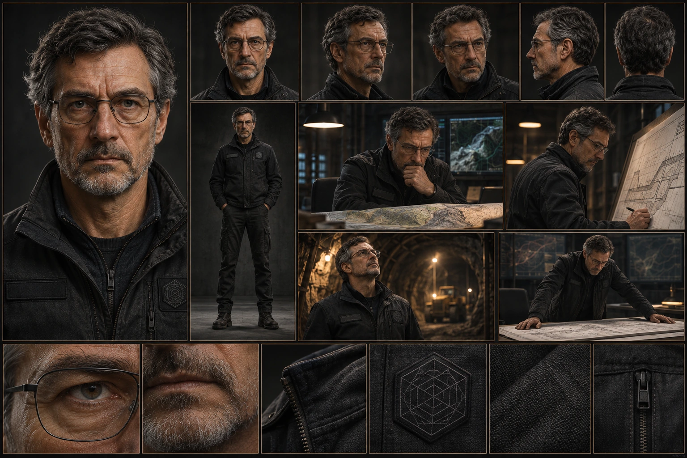

Geologist · Engineer
An expert who assesses risks before work begins
Ostap Kravets — геолог та інженер, чиї знання стають важливими під час кризових ситуацій і масштабного підземного будівництва. Він аналізує стан споруд і гірських масивів, перш ніж ухвалювати рішення, від яких залежить безпека людей.
CHARACTER BACKGROUND
The Mathematics of Disaster
During the crisis at the dam, Ostap is among the first to assess the consequences of an explosion. At the crisis centre, he coordinates the analysis of the structure’s behaviour alongside engineers, hydraulic-structure specialists, military analysts and emergency services. He is not formally in charge of the entire group, yet his conclusions often prove especially accurate.
The Underground City Beneath Donetsk
Later, Ostap leads a separate workstream beneath Donetsk. His team surveys the old mines, checking gas, water, support structures and the stability of each area. He does not treat existing mine workings as ready-made infrastructure: every section must be assessed individually.
During construction, Kravets relies on geological data, sensors and a shared model of the rock mass. The planned underground space is divided into small sectors, and rock is removed in stages through portals. This approach helps control load redistribution, groundwater movement and the risk of collapse.
After Donetsk, Ostap plans to move on to work in Luhansk. This remains a separate workstream from the general programme for building other underground cities.